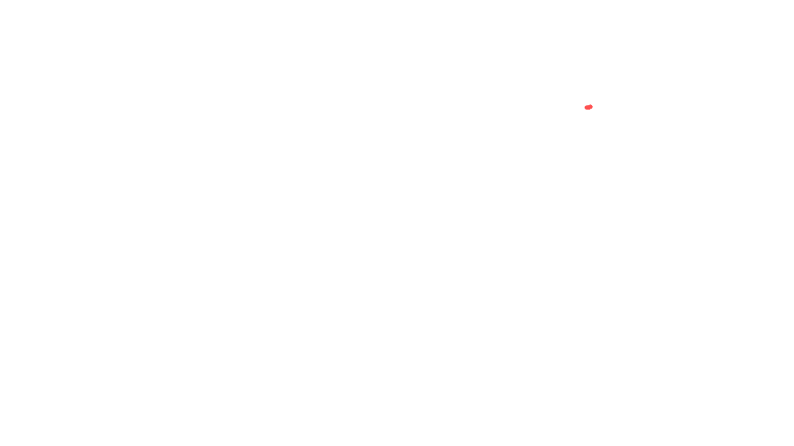

À Propos de Mon Profil
De la maintenance de proximité à la conception d'infrastructures réseaux complexes, mon parcours est guidé par une passion pour la résolution de problèmes et la sécurisation des systèmes d'information.
Mes Compétences Techniques
Réseau & Sécurité
Administration Système
Support & Outils
Parcours Pro
Alternant Technicien Informatique
Maintenance de parcs informatiques (SCOP). Gestion de tickets N1/N2, déploiement de serveurs, configuration de switches/firewalls et assistance utilisateur.
Stagiaire Technicien Support
Diagnostic et réparation hardware. Assistance de proximité pour les utilisateurs, masterisation de postes et configuration réseau basique.
Formation
BTS SIO (Option SISR)
Solutions d'Infrastructure, Systèmes et Réseaux. Apprentissage approfondi de l'administration réseau, Windows/Linux Server et cybersécurité.
Bac Pro SN (Option RISC)
Réseaux Informatiques et Systèmes Communicants. Bases de l'électronique, câblage, et configuration de switchs/routeurs.
Projets & Situations Professionnelles
Épreuve E4 - BTS SIO Option SISR

Refonte LAN : 6 Commutateurs, VLANs & Management Cloud
Remplacement de 6 anciens switches par une architecture VLANs 802.1Q managée via portail Cloud pour l'école Sancta Maria. Segmentation complète des flux administration / pédagogie / gestion.

Infrastructure WiFi Centralisée : Aruba Instant & FortiGate
Déploiement de bornes d'accès Aruba sur un nouveau site, pilotées par un contrôleur virtuel. Double SSID avec isolation des flux via VLANs sur FortiGate (réseau interne + invités).
Tableau de Synthèse des Réalisations
Missions complémentaires réalisées en formation et en entreprise — Session 2026.
Refonte LAN : Remplacement de 6 Commutateurs, Segmentation VLANs & Management Cloud
Situation : Nouveau client Exantis — l'école Sancta Maria souhaitait remplacer une infrastructure réseau vétuste et non-manageable par une architecture moderne, sécurisée et supervisable à distance.
1 Présentation de l'entreprise & Contexte
Mon alternance se déroule chez Exantis Informatique, une SCOP (Société Coopérative et Participative) basée à Avignon, spécialisée en infogérance pour les PME et établissements scolaires de la région PACA.
L'école Sancta Maria est un nouveau client d'Exantis, ayant changé de prestataire suite à une gestion désorganisée de l'ancien informaticien. Le réseau en place reposait sur des switches D-Link grand public non-manageables, ce qui rendait toute supervision ou segmentation impossible.

Locaux d'Exantis Informatique — Avignon
2 Problématique Technique
Le problème principal résidait dans l'architecture « à plat » (réseau non segmenté). Tous les équipements — administration, classes pédagogiques et bornes Wi-Fi — cohabitaient sur le même plan d'adressage 192.168.1.0/24 sans isolation. Un élève pouvait techniquement accéder aux partages réseau de la direction.
Risques identifiés
- Accès non autorisé aux données de la direction (RGPD)
- Aucune supervision possible : pannes non détectées en temps réel
- Congestion réseau : diffusion des broadcasts sur tous les équipements
- Pas de gestion de l'alimentation
PoE(budget énergie non contrôlé)
Le cahier des charges établi avec le client exigeait : fiabilité maximale, gestion à distance, isolation des données direction, et évolutivité (ports PoE+ pour futures caméras/bornes).
3 Étude des Solutions & Choix Technique
| Solution envisagée | Gestion distante | VLANs | Coût | Verdict |
|---|---|---|---|---|
| Switches non-manageables | ✗ | ✗ | Faible | Rejeté |
| Switches CLI manageable | ~ | ✓ | Élevé | Complexité excessive |
| HPE Instant On 1930 (Cloud) | ✓ | ✓ | Moyen | ✓ Retenu |
La gamme HPE Networking Instant On 1930 offre le meilleur compromis : interface de gestion Cloud accessible depuis un navigateur, support natif des VLANs 802.1Q et des trunk inter-switches, et alimentation PoE+ intégrée (30W par port).
4 Conception : Architecture & Plan d'Adressage
L'établissement étant réparti sur plusieurs bâtiments, j'ai conçu une topologie en étoile étendue avec un switch cœur de réseau en baie principale. Chaque bâtiment dispose d'un switch de distribution connecté via un lien trunk 802.1Q transportant les 3 VLANs tagués.
10.0.10.0/2410.0.20.0/2410.0.30.0/24
Schéma réseau logique — École Sancta Maria

Plan d'adressage IP segmenté

Table des VLANs configurée sur le portail
5 Déploiement & Configuration
Pour minimiser l'interruption, j'ai réalisé la pré-configuration des 6 switches en laboratoire sur le portail HPE Instant On avant l'intervention sur site. Le déploiement physique a été réalisé en dehors des heures de cours.
// Logique de configuration par port
Port uplink (inter-switch) → mode trunk — VLANs 10,20,30 tagués
Port serveur / imprimante → mode access VLAN 20
Port salle de classe → mode access VLAN 30
Port borne Wi-Fi (PoE+) → mode trunk — VLANs 20,30
Une contrainte énergétique supplémentaire a été adressée : les ports PoE+ alimentant les équipements pédagogiques sont configurés avec une plage horaire de coupure automatique la nuit (22h–6h), réduisant la consommation électrique hors présence.
Rackage, câblage et brassage en baie 19"
6 Supervision Cloud & Résultats
Le portail HPE Instant On génère une cartographie dynamique de tous les switches avec l'état de santé de chaque équipement. Des alertes sont automatiquement envoyées (email) si un switch se déconnecte, avec indication de la cause probable (link down, perte d'alimentation, etc.).

Interface de supervision Cloud — Topologie HPE Instant On
7 Difficultés Rencontrées & Bilan
Principale difficulté
L'absence totale de plan de brassage existant a nécessité un audit physique complet : utilisation d'un testeur de câble pour identifier chaque connexion et reconstituer la cartographie des ports avant d'affecter les VLANs.
Ce projet a pleinement validé le cahier des charges : réseau fiable, sécurisé et supervisable à distance. Il m'a permis de mettre en pratique des concepts fondamentaux du SISR — trunking 802.1Q, segmentation par VLAN, gestion PoE — sur une infrastructure de production réelle, dans un délai contraint de 3 jours.
Infrastructure WiFi Centralisée : Bornes Aruba Instant & Sécurisation FortiGate
Situation : Ouverture d'un nouveau site pour l'entreprise Rouby, sans infrastructure réseau préexistante. Exantis est mandaté pour déployer une couverture Wi-Fi complète avec double réseau isolé (personnel / invités).
1 Contexte & Présentation du Besoin
L'entreprise Rouby inaugure un nouveau site. Le bâtiment est vierge de toute connectivité réseau. Les contraintes métiers imposent deux catégories d'utilisateurs avec des droits d'accès radicalement différents :
- Employés : accès complet au réseau local, serveurs, imprimantes et Internet.
- Visiteurs / Fournisseurs : accès Internet uniquement, isolation totale du réseau interne.
La priorité absolue est la sécurité des données internes : un visiteur connecté au Wi-Fi invité ne doit sous aucun prétexte pouvoir accéder aux ressources du réseau de l'entreprise.
2 Problématique Technique
Sans infrastructure existante, plusieurs défis se posent simultanément : assurer une couverture radio homogène sur tout le bâtiment, créer une architecture multi-SSID avec isolation de flux, et garantir une gestion centralisée des bornes (éviter la configuration individuelle de chaque équipement).
Risques à adresser
- Zones mortes WiFi si les bornes sont mal positionnées
- Accès invités au réseau LAN sans règles de filtrage strictes (
VLAN hopping) - Configuration dispersée si les bornes sont administrées individuellement
3 Choix Architectural : Aruba Instant + FortiGate
Après étude comparative, la solution retenue combine :
Contrôleur virtuel intégré aux bornes (pas de matériel dédié). L'une des bornes élit automatiquement un Virtual Controller qui gère l'ensemble du cluster via le protocole ADP. Configuration centralisée via interface web unifiée.
Centralise le routage inter-VLAN, les serveurs DHCP, la traduction d'adresses (NAT) et les politiques de filtrage. Isole hermétiquement le trafic invité du réseau interne.
L'uplink entre le switch PoE et le FortiGate est configuré en trunk 802.1Q pour transporter les deux VLANs sur un seul câble physique.
4 Conception : Plan d'Adressage & Architecture
Deux VLANs sont définis, avec des plages d'adressage distinctes et des serveurs DHCP dédiés sur le FortiGate :
192.168.30.0/24Rouby-InterneWPA2-PSK192.168.40.0/24Rouby-InvitesLes bornes Aruba sont connectées sur des ports PoE+ du switch, configurés en trunk autorisant les VLANs 30 et 40 tagués. Chaque borne diffuse les deux SSID simultanément.
5 Configuration Aruba Instant — Contrôleur Virtuel
À la mise sous tension, les bornes s'auto-découvrent via le protocole ADP (Aruba Discovery Protocol). La borne ayant la plus grande adresse MAC est automatiquement élue Virtual Controller. L'interface d'administration est accessible sur l'IP virtuelle du cluster.
// Paramétrage SSID dans l'interface Aruba Instant
SSID "Rouby-Interne"
→ Security : WPA2-Personal (passphrase)
→ VLAN : 30 (tagged uplink)
→ Band : 2.4 GHz + 5 GHz
SSID "Rouby-Invites"
→ Security : Captive Portal (page d'accueil)
→ VLAN : 40 (tagged uplink)
→ Client Isolation : Enabled
L'option Client Isolation empêche également les clients du même SSID invité de communiquer entre eux (protection contre les scans horizontaux sur le réseau Guest).
6 Sécurisation des Flux sur FortiGate
L'ensemble de la logique de sécurité est centralisé sur le FortiGate. J'ai créé deux interfaces VLAN virtuelles sur le port LAN physique, chacune avec son propre serveur DHCP :
// Interfaces FortiGate (Network → Interfaces)
VLAN30-Interne | port1.30 | IP: 192.168.30.1/24
VLAN40-Invites | port1.40 | IP: 192.168.40.1/24
// Politiques de filtrage (Policy & Objects → Firewall Policy)
Règle 1 : VLAN30 → WAN | ACCEPT + NAT
Règle 2 : VLAN40 → WAN | ACCEPT + NAT (DNS, HTTP/S uniquement)
Règle 3 : VLAN40 → VLAN30 | DENY (isolation totale)
La règle 3 est la règle de sécurité critique : elle bloque tout trafic provenant du réseau invité vers le réseau interne, rendant l'isolation complète et indépendante de la configuration des bornes.
7 Tests de Validation & Bilan
Tests réussis
- Couverture radio validée sur tout le site
- Client VLAN30 → ping vers serveurs LAN :
OK - Client VLAN40 → ping vers Internet :
OK - Portail captif fonctionnel (affichage page d'accueil)
Tests d'isolation validés
- Client VLAN40 → ping VLAN30 :
Timeout✓ - Scan Nmap VLAN40 → VLAN30 :
0 hosts up✓ - Isolation client-à-client (VLAN40) :
OK✓
Ce projet m'a permis de mettre en œuvre une architecture WiFi professionnelle complète : maîtrise du concept de contrôleur virtuel Aruba, configuration d'un trunk 802.1Q multi-VLAN, et déploiement de politiques de filtrage sur FortiGate. L'ensemble de la solution est opérationnel et conforme au cahier des charges sécurité.
L'évolution de la Cybersécurité dans les réseaux
Dans un contexte où les attaques se multiplient, ma veille technologique se concentre sur la sécurisation des architectures et les nouvelles normes de protection.
Méthodologie & Outils de Veille
1. Ciblage & Thème
Je me concentre sur les vulnérabilités réseaux (LAN/WLAN), les failles matérielles (Fortinet, Cisco) et les normes européennes (NIS 2).
2. Outils de Collecte
J'utilise des agrégateurs de flux RSS (Feedly, Inoreader) et des alertes par mots-clés Google pour centraliser l'information automatiquement.
3. Traitement & Sources
Tri hebdomadaire des alertes officielles (CERT-FR, ANSSI), des blogs spécialisés (IT-Connect) et des forums (Reddit r/sysadmin).
Actualités IT (Flux en direct)
Sources : CERT-FR, IT-Connect, Le Monde InformatiqueRécupération des derniers articles en cours...
Impact sur ma pratique professionnelle
Cette veille technologique n'est pas que théorique, elle influence directement mon travail de technicien chez Exantis. La lecture régulière du CERT-FR et d'IT-Connect me pousse à systématiser la mise à jour des firmwares (Fortinet, HPE) chez nos clients. Je me sers également de cette actualité pour sensibiliser les entreprises à l'importance de segmenter leurs réseaux (VLANs) face aux nouvelles menaces.